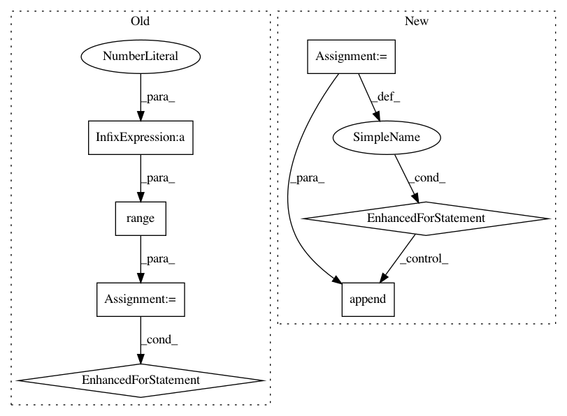

ee602b6f68f0bdd19f449a86955697f8f0a2d54c,gluoncv/data/transforms/video.py,VideoMultiScaleCrop,forward,#VideoMultiScaleCrop#Any#,199
Before Change
w_off = random.randint(0, w - self.width)
scaled_clips = np.zeros((self.height, self.width, c))
num_imgs = int(c / 3)
for frame_id in range(num_imgs):
cur_img = clips[:, :, frame_id*3:frame_id*3+3]
crop_img = cur_img[h_off:h_off+crop_height, w_off:w_off+crop_width, :]
scaled_clips[:, :, frame_id*3:frame_id*3+3] = \
self.cv2.resize(crop_img, (self.width, self.height))
return nd.array(scaled_clips)
class VideoCenterCrop(Block):
Crops the given numpy array at the center to have a region of
After Change
w_off = random.randint(0, w - self.width)
new_clips = []
for cur_img in clips:
crop_img = cur_img[h_off:h_off+crop_height, w_off:w_off+crop_width, :]
new_clips.append(self.cv2.resize(crop_img, (self.width, self.height)))
return new_clips
class VideoCenterCrop(Block):
In pattern: SUPERPATTERN
Frequency: 3
Non-data size: 7
Instances
Project Name: dmlc/gluon-cv
Commit Name: ee602b6f68f0bdd19f449a86955697f8f0a2d54c
Time: 2019-09-21
Author: yizhu59@gmail.com
File Name: gluoncv/data/transforms/video.py
Class Name: VideoMultiScaleCrop
Method Name: forward
Project Name: keras-team/autokeras
Commit Name: 1cda66554188c4504aa94d1bcffd4cef9ee8a997
Time: 2017-12-28
Author: jhfjhfj1@gmail.com
File Name: autokeras/net_transformer.py
Class Name:
Method Name: transform
Project Name: dmlc/gluon-cv
Commit Name: ee602b6f68f0bdd19f449a86955697f8f0a2d54c
Time: 2019-09-21
Author: yizhu59@gmail.com
File Name: gluoncv/data/transforms/video.py
Class Name: VideoCenterCrop
Method Name: forward